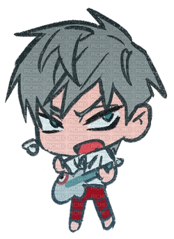

¿Quién es Till?
Till es uno de los personajes principales de Alien Stage, la serie animada creada por VIVINOS. Destaca por su personalidad fuerte, reservada y apasionada por la música. A lo largo de la historia demuestra un gran talento como cantante y una determinación inquebrantable para proteger aquello que considera importante.
📋 Información básica
- Nombre: Till
- Serie: Alien Stage
- Creador: VIVINOS
- Personalidad: Valiente, serio y decidido.
- Habilidad: Canto.
- Color representativo: Azul.
✨ Curiosidades
Till es admirado por muchos seguidores gracias a su carácter firme y a la intensidad de sus interpretaciones musicales. Su desarrollo dentro de Alien Stage muestra cómo enfrenta situaciones difíciles sin perder su determinación, convirtiéndose en uno de los personajes más memorables de la serie.